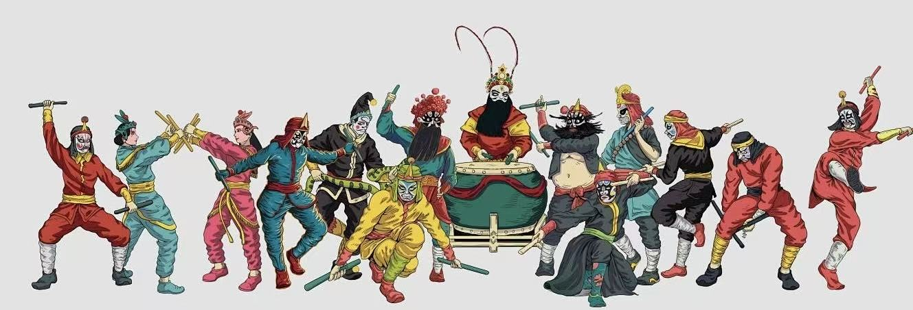
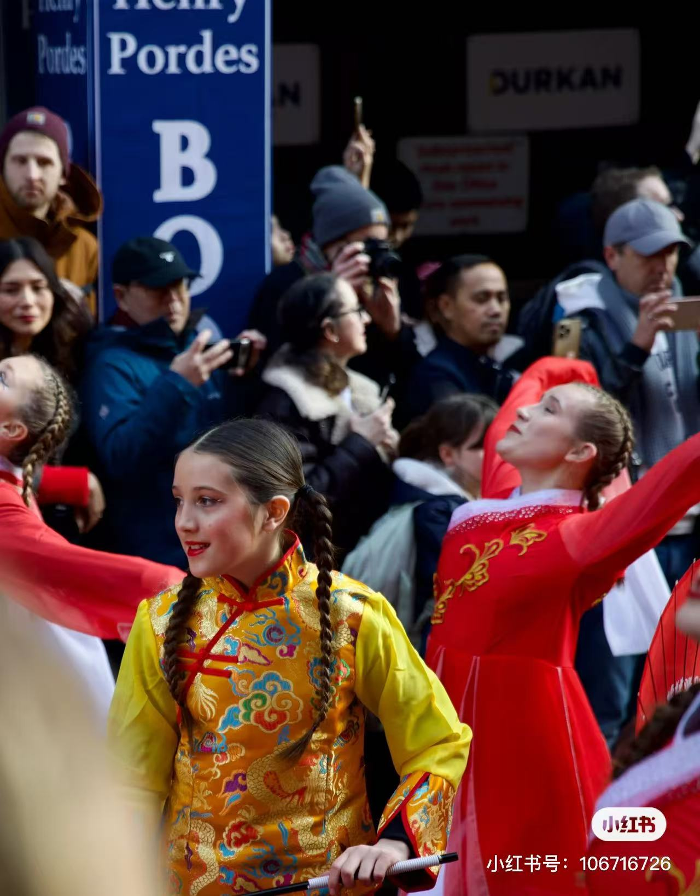
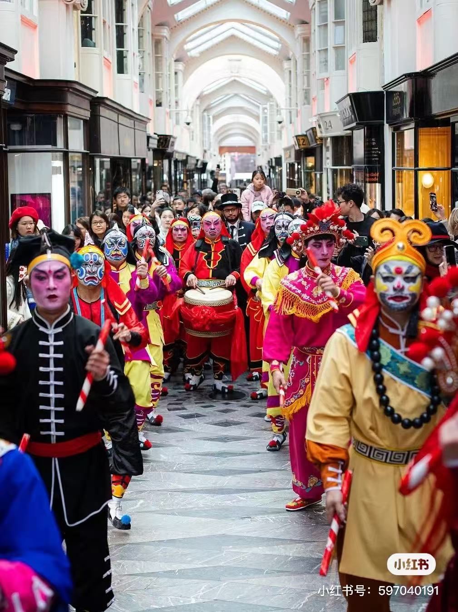

英歌舞的历史文化背景
英歌舞是中国岭南地区的传统民间舞蹈，其历史文化可追溯至明代中期，糅合了傩祭仪式、武术与戏曲元素。其起源众说纷纭：一说源于古代傩舞，用于驱邪避疫，舞者脸谱与傩面具一脉相承；一说受山东秧歌影响，经福建传入潮汕后演化而成；亦有观点认为其脱胎于《水浒传》故事，以梁山好汉装扮展现英雄气概，象征团结抗争的精神。清代起，英歌舞与潮汕民间信仰结合，成为游神赛会的重要仪式，兼具祈福与娱乐功能。2006年，它被列入国家级非物质文化遗产，近年更以“中华战舞”之名走出国门，成为中华文化传播的亮眼符号。

英歌舞风采
中华战舞，燃动世界
近年来，英歌舞以“中华战舞”之名频频亮相国际舞台，成为传统文化创新性传播的典范。从法国巴黎圣母院广场的元宵巡游到迪拜世博会中国馆的展演，其铿锵有力的步伐与阳刚雄健的气韵引发海外观众惊叹；2022年更登上北京冬奥会开幕式热场环节，通过现代光影技术放大百人方阵的震撼力，向世界展现中国非遗的当代活力。海外社交平台上，英歌舞面具彩绘、槌棒击打等特色元素衍生出百万播放量的二创视频，青年舞者将街舞节奏融入传统套路，形成跨文化对话的新范式。
如今，全球30余个国家的高校社团自发组建英歌舞队，这种承载着勇武精神与集体美学的东方战舞，正以青春姿态架起文明互鉴的桥梁。


感英歌之燃，传英歌之魂
英歌舞以刚劲舞步与铿锵锣鼓传递出岭南先民的精神基因，其傩舞内核承载驱邪扶正的集体使命感，水浒英雄符号凝聚忠义担当的家国情怀，武术动作彰显勇武不屈的生命力量，
而百人齐舞的磅礴阵势更凸显团结协作的社群意识。
“文化是一个国家、一个民族的灵魂。中华文明绵延五千年，以独特的基因屹立东方，丰富着全人类的文明图谱。或藏于馆阁，或见诸典籍，璨若星河的中华文明期待你我去感知感受、传承创新、发扬光大。”